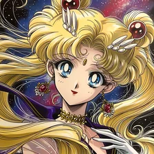
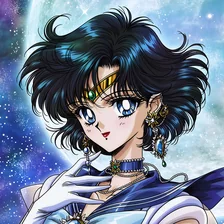
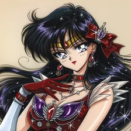
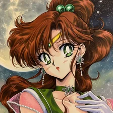
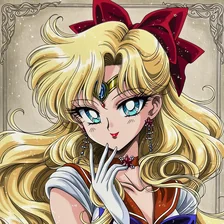

Die Abteilungen
Fünf Wächterinnen,
ein Versprechen
Jede Abteilung wird von einer Spezialistin geführt, deren Talente Sie sonst nirgendwo buchen können. Scrollen Sie weiter — das Rad dreht sich.Wischen Sie durch die Abteilungen.
Die Abteilungen
Fünf Wächterinnen,
ein Versprechen
Jede Abteilung wird von einer Spezialistin geführt, deren Talente Sie sonst nirgendwo buchen können. Scrollen Sie weiter — das Rad dreht sich.Wischen Sie durch die Abteilungen.

Usagi Tsukino
Chief Empathy Officer · PR
Unendliche Empathie und die Fähigkeit, selbst verfeindete Geschäftspartner zum Weinen und Versöhnen zu bringen. Sie hält die Eröffnungsreden, moderiert Deeskalationen und leitet Pressekonferenzen nach Skandalen. Wenn sie redet, schmilzt jeder Kunde dahin.
Interne Notiz: Büro mit fest eingebautem Nickerchen-Sofa. Onboarding verzögert sich planmäßig um 30 Minuten — Stau, oder es musste noch ein Hörnchen gegessen werden.
RedenDeeskalationRührungsgarantie

Ami Mizuno
CTO · Data Analytics
IQ 300, analytische Kälte unter Druck. Ami baut die Algorithmen für Risikoanalysen, programmiert die Firmensoftware, wertet Marktanalysen mit ihrem Supercomputer aus und liefert 500-seitige Reports — fehlerfrei.
Interne Notiz: Versucht seit Jahren, Usagi beizubringen, wie man ein PDF speichert. Sämtliche Firewalls tragen Namen von Lernsoftware.
AnalyticsReportsSoftware

Rei Hino
Chief Risk Officer · Spiritual QA
Hellseherische Prognosen und Vibe-Checks für Verträge: Vor jeder Unterschrift wandern Mantras ins Feuer — bei schlechtem Gefühl wird der Deal gecancelt. Übernimmt außerdem das Beschwerdemanagement, wahlweise mit Anekdoten über Dämonenaustreibung.
Interne Notiz: Versiegelt cholerische Kunden und schlechte Bilanzen wörtlich mit Ofuda-Talismanen. „Akuryo Taisan!“
Vibe-CheckPrognosenOfuda

Makoto Kino
Catering, Facilities & Security
Bärenstarke Physis, botanisches Wissen, meisterhafte Kochkunst. Ihre Bentōs und Torten schließen Deals schneller ab als jeder Anwalt. Bei unebenen Tischen oder säumigen Zahlern geht Mako kurz persönlich vorbei.
Interne Notiz: Jedes Buffet sieht aus wie für eine Traumhochzeit. Bei jedem neuen Kunden: „Er erinnert mich ein bisschen an meinen Ex-Freund …“
CateringSecurityFacilities

Minako Aino
CMO · Brand Ambassador
Idol-Erfahrung, Stilsicherheit, Medien-Gespür. Minako verantwortet Brand-Design und Social-Media-Kampagnen, weiß genau, was sich verkauft, und inszeniert jedes Firmen-Event wie eine Stadion-Tournee.
Interne Notiz: Baut in jede Kampagne ein Foto von sich selbst ein und verwechselt in Meetings Sprichwörter. Wird laufend von Artemis korrigiert.
BrandingSocial MediaKampagnen